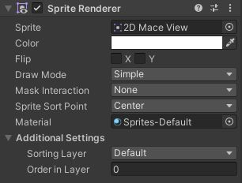
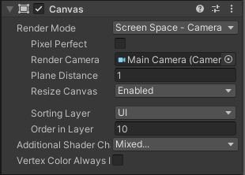

Dans Unity, on peut gérer les calques pour décider dans quel ordre les afficher. On fait cela grâce aux Sorting layers. Je recommande de créer un calque pour le fond afin qu'il reste en tout temps derrière le reste. Ensuite, vous pouvez laisser la plupart des éléments de votre jeu sur default. Un calque joueur peut être utile pour vous assurer que votre joueur soit devant les plateformes en tout temps. Finalement, un calque UI peut être utile pour afficher un menu par-dessus votre jeu.
Créer les sorting layers est simple, il suffit d'ouvrir n'importe quel objet dans l'inspecteur, puis de cliquer sur le menu défilant de Layer en haut à droite. On appuie ensuite sur AddLayer. Dans la nouvelle fenêtre qui s'ouvre, on veut modifier les Sorting Layers, on doit donc ouvrir ce menu déroulant. Normalement, il y a seulement un layer nommé Default dans ce menu, on peut en ajouter avec le +. Je recommande d'ajouter un layer pour le Fond, un pour le joueur et un pour le UI. Une fois vos Layer créés, vous devez classer ceux-ci dans leur ordre d'affichage. Le layer le plus haut est celui qui sera le plus derrière. Ainsi, je mettrais Fond, Default, Joueur, UI.
Que ce soit pour votre image de fond, pour votre joueur ou n'importe quel autre élément, il est possible de modifier le calque d'un Sprite Renderer.
Ouvrez le GameObject contenant votre Sprite Renderer dans l'inspecteur, puis ouvrez le menu Additional Settings au bas de la composante. Alors, vous verrez Sorting Layer et vous pourrez choisir le calque de votre choix. Si vous modifier Order in Layer, cela vous permet d'ajuster l'ordre de vos calques à l'intérieur du même layer. Un chiffre plus élevé apparaîtra devant.
Ici, la procédure est la même que pour le Sprite Renderer, trouvez la composante Tilemap Renderer, puis dans Additional Settings, vous pouvez modifier le sorting layer.
La composante Image n'a pas de sorting layer, en fait, l'ordre d'affichage du UI est déterminé par le placement des GameObjects à l'intérieur du Canvas dans la hiérarchie. Ainsi, si un GameObject est plus bas qu'un autre, il sera au-dessus. Ici, clé apparaîtra au-dessus du calque boutons:

On doit faire attention à l'ordre de nos GameObjects dans le canva pour s'assurer qu'on peut interagir avec tous nos éléments.
Pour modifier l'ordre du Canvas par rapport à nos autres objets qui ne font pas partie de celui-ci, on modifie directement le sorting layer du Canvas. Pour ce faire, on trouve la composante Canvas sur le GameObject Canvas, puis on modifie le paramètre Sorting Layers.
